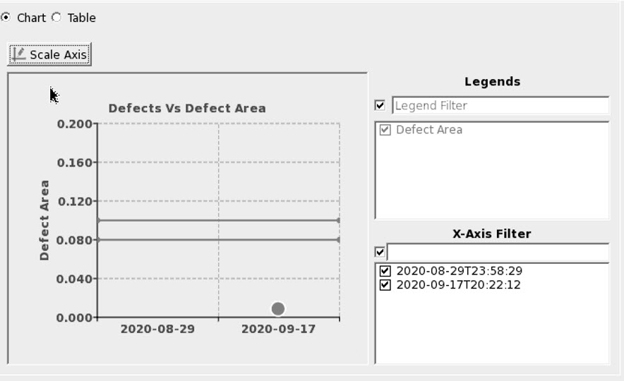

Defect Progress Tracking (DPT)
Description
The following figure illustrates a defect’s CD variation collected by Calibre DefectClassify for each inspection of a patterned mask. In this example, the CD variation of a defect is high for inspection Demo-2.ldf, which causes the inspection to raise a warning, requiring further review and investigation.
Objects
- DPT Query
Select Defect Progress Tracking option in the Select Query pane.
- DPT Types and DPT Inputs
The DPT Types and DPT Inputs regions allow you to track a defect by selecting from several different methods.
Defects In Inspection
To track a defect in an inspection, specify the mask, the inspection from the mask, the defect from the inspection, and the defect property to track. Click the Execute button at the top of the window to generate the DPT plot.
Figure 2. Execute in the Button BarFigure 3. Tracking a Defect in an Inspection
Defect attributes supported for trend analysis are:
Defect Area — Specifies the area of defect reported by an inspection tool (supplied through inspection report file).
Defect Size — Specifies the size of the defect reported by Calibre DefectClassify.
CD Var — Specifies the CD variation of defect reported by Calibre DefectClassify.
Transmittance — Specifies the transmittance of a defect reported by Calibre DefectClassify. The transmittance value of a defect blob is calculated as a ratio of the minimum GL of defect blob to the maximum GL value assigned to a pixel in a large clear region by an inspection machine. For example, if the GL value of the darkest pixel in the blob is 170 and the maximum GL value of a pixel in a larger clear region is 255, the transmittance value is 170 / 255 = 0.66.
Reflectance — Specifies the reflectance of a defect reported by Calibre DefectClassify. The reflectance value of a defect blob is calculated as a ratio of the maximum GL of defect blob to the maximum GL value assigned to a pixel in a large clear region by an inspection machine. For example, if the GL value of the brightest pixel in the blob is 70 and maximum GL value of the pixel in larger clear regions is 255, then transmittance value is 70 / 255 = 0.27.
Transmittance Residue — Specifies the transmitted residue of a defect reported by Calibre DefectClassify. Residue is maximum absolute value of the difference of transmitted defect and reference image.
Reflectance Residue — Specifies the reflected residue of a defect reported by Calibre DefectClassify. Residue is the maximum absolute value of the difference between the reflected defect and reference image.
T Flux — Specifies the transmitted flux ratio. Refer to “Measuring Flux Area” for further details.
R Flux — Specifies the reflected flux ratio. Refer to “Measuring Flux Area” for further details.
X Axis — An optional parameter defining the x-axis. This can either be set to Inspection Start Date (default) or Inspection Unique ID based on which x-axis label is currently displayed in the result chart.
The following figure illustrates the x-axis displayed when Inspection Start Date is selected:
Figure 4. X-Axis (Inspection Start Date)Inspection Speed Mode — An inspection report is inspected either in Normal or Fast mode. You can generate a defect progress tracking chart for Normal mode inspections, Fast mode inspections, or both.
Upper and Lower Control Limits can optionally be defined for attributes such as Defect Area:
Upper Control Limit (UCL) — An optional value establishing an upper limit for any inspection, and then highlighting violations in the result chart.
Lower Control Limit (LCL) — An optional value establishing a lower limit for any inspection, and then highlighting violations in the result chart.
The following figure illustrates a result of a DPT query where the UCL value is set to 0.8 and the LCL is set to 0.3 for the Defect Area. The actual value of 0.07 lies outside the UCL and LCL values and is highlighted in red. The UCL and LCL values are also highlighted in red lines on the chart.
Figure 5. UCL and LCL HighlightedInspection Date-Time Range — An optional value that specifies a date and time range to analyze defects from a particular time period (for example, tracking the size of a defect from inspections performed between January 1st, 2019 and December 31st, 2019).
Scale Axis — The range of the y-axis can be modified using the Scale Axis button. The required minimum and maximum values is specified in the Scale Axis dialog box. Auto sets the default range for the y-axis. Click Apply to set the range on the Chart view and close the dialog box, or Ok to apply the changes without closing the dialog box.
Figure 6. Set Axis Range
The following points apply:
In the Mask Unique Id drop down box, the mask unique ID, related blank mask unique ID, and link mask unique ID are displayed for selection. Refer to “Reticle Information File (RIF)” for details on blank and link mask unique IDs.
Once a mask unique ID is selected, inspections from all related mask unique IDs from the selected mask unique ID are displayed in the Inspection drop down box.
Finding related mask unique IDs of a selected mask unique ID works recursively with linked blank and link mask unique IDs.
In the results displayed, all the Inspection Reports (IRs) available for the specified mask unique ID are displayed even though the specified defect is not selectable in the IRs. As shown in following figure, the defect is not detected in the highlighted IR:
Figure 7. IR With Missing DefectThis behavior also applies to the Defect On Reticle option.
Defect On Reticle
To track a defect on the reticle, specify the mask, defect on mask and the defect property to track. Click Execute to generate the DPT plot. The defect attributes supported are Defect Area as well as Calibre DefectClassify attributes such as Defect Size, CD Variation, Transmittance, Reflectance, Transmittance Residue, and Reflectance Residue.
Figure 8. Tracking a Defect on a ReticleThe following apply:
The defects across an inspection from a mask are correlated when you save the inspections to the database. In the Defect combo box in Figure 3, only one defect (that works as reference) from the list of common defects is displayed for selection.
In the Mask Unique Id drop down box, the mask unique ID, related blank mask unique ID, and link mask unique ID are displayed for selection. Refer to “Reticle Information File (RIF)” for details on blank and link mask unique IDs.
Once a mask unique ID is selected, inspections from all related mask unique IDs from the selected mask unique ID are displayed in the Inspection drop down box.
Finding related mask unique IDs of a selected mask unique ID works recursively with linked blank and link mask unique IDs.
The x-axis can either be set to the Inspection Start Date (the default) or the Inspection Unique ID based on the X Axis label displayed in the result chart.
Defects Count
To track defect count for each class of defects across inspections, specify the mask, inspections of the selected mask, classification review type (ADC/OPC/BOTH), secondary classification tier, defect classification types of selected classification tiers, and inspection date-time range as shown in following figure.
Figure 9. Tracking Defect CountClick Execute to generate the results as shown in the following figure.
Figure 10. Tracking Defect Count for ClassificationsThe following apply:
In the Mask Unique Id drop down box, the mask unique ID, related blank mask unique ID, and link mask unique ID are displayed for selection. Refer to “Reticle Information File (RIF)” for details on blank and link mask unique IDs.
Once a mask unique ID is selected, inspections from all related mask unique IDs from the selected mask unique ID are displayed in the Inspection drop down box.
Finding related mask unique IDs of a selected mask unique ID works recursively with linked blank and link mask unique IDs.
Highlight Increasing Defects Across Inspections (Count)
Defect count accumulation on subsequent inspections can be highlighted by specifying values for Cumulative Defect Count and Diff Count Threshold as shown in the following figure.
Figure 11. Cumulative Defect CountThe following figure shows an example result highlighting inspections that exceeded the specified threshold of three defects past the initial count from the first inspection. Any inspections that passed the threshold are highlighted in red filled circles. In the figure, a difference in the defects count between the base inspection and subsequent inspections demo3.ldf, demo4.ldf, and demo5.ldf went beyond the than Diff Count Threshold of 3 (refer to “Specifying a Base Inspection” for information on setting a base inspection). If the base inspection was not set, the difference in the defects count is taken between the first inspection demo1.ldf and subsequent inspections demo3.def, demo4.ldf, and demo5.ldf.
Figure 12. Cumulative Defect Count ResultsThe following apply to Cumulative Defect Count:
The results are sorted based on the inspection start time.
The first inspection based on the Start Time is considered as the reference inspection.
When the Cumulative Defect Count is selected, Classification Review Type supports ADC and OPC. BOTH is not allowed when this option is specified.
- DPT Image Viewer
The image viewer facilitates deeper analysis of defect images. As shown in following figure, you can change the image to Stretched, Colored, Binary, or keep as Original for manual analysis.
Figure 13. DPT Image ViewerTo navigate a defect’s image for analysis, click the defect on the plot as shown in following figure. The corresponding image’s title box is highlighted in yellow.
Figure 14. Image Navigation from a Plot’s Defect- DPT Results
You can visualize defect progress using the plot and table views as shown in the following figure.
Figure 15. Table View for Defect TrackingTo launch an inspection run in the Calibre DefectReview main window with only defects available on the result table, double-click on an inspection row in the result table. This opens an inspection in a new Calibre DefectReview window if there are other inspections already open.
To analyze the result using a chart, click the Chart radio button. The result is illustrated in the following figure.
Figure 16. Chart View for Defect TrackingTo activate or deactivate a classification series, check or uncheck options displayed in the Legends pane. To activate or deactivate an inspection from the X-Axis, check or uncheck inspections from the X-Axis Filter pane.
When executed, a query may have either the Table or Charts or both types of results. You can configure the default results view using the DmQueryResultView node in the dat-ini.xml file. The default results view is set for Table view.
Figure 17. Query Result View ConfigurationIf you want to retain notes, the RegionAnalysis, DefectSourceAnalysis, and BlankTransferAnalysis currently only keep tabular results. The option for configuration is provided for future enhancements.